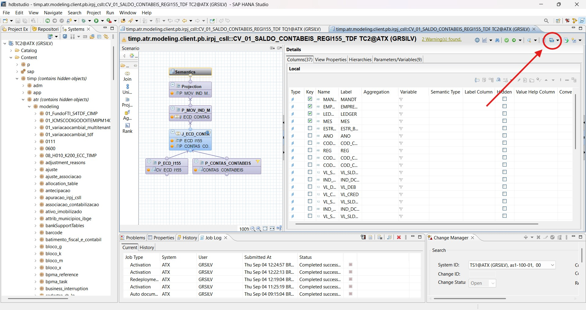
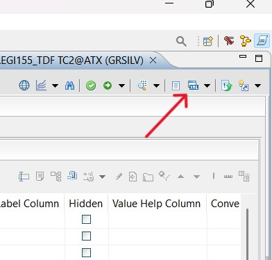
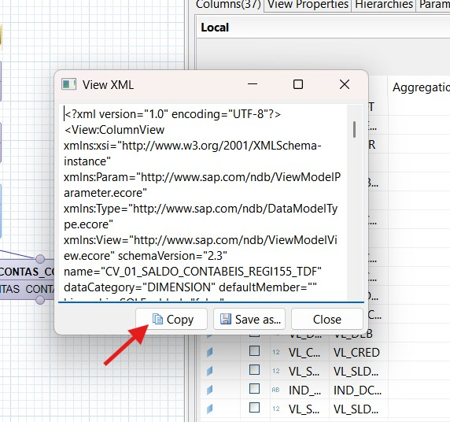

Atenção: A estrutura gerada deve ser revisada antes de
ser utilizada.
Como copiar o XML do HANA
- Acesse a view desejada no HANA Studio ou Web IDE.
-
Clique no botão Display XML para visualizar o XML
da view.
  -
Um modal será aberto mostrando o XML.

- Copie todo o conteúdo do XML exibido no modal.
- Cole o XML no campo acima (Cole o XML aqui) do TIMP Structure Generator.